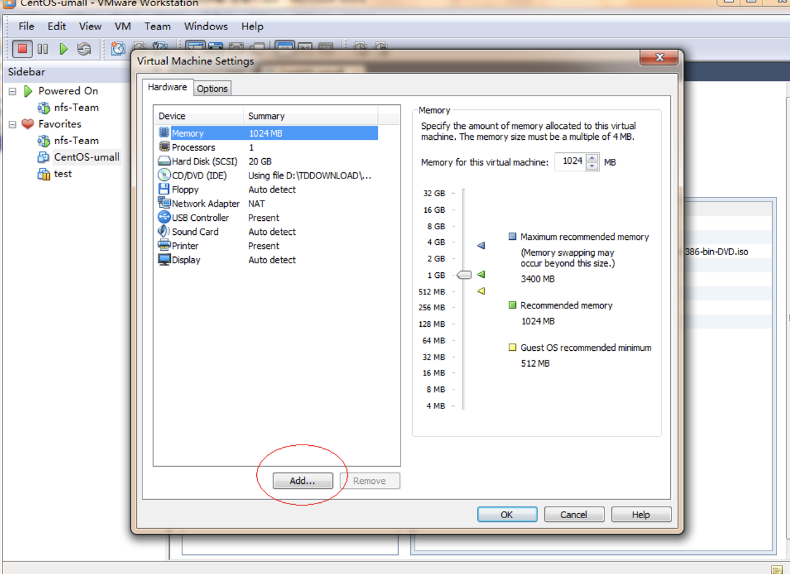
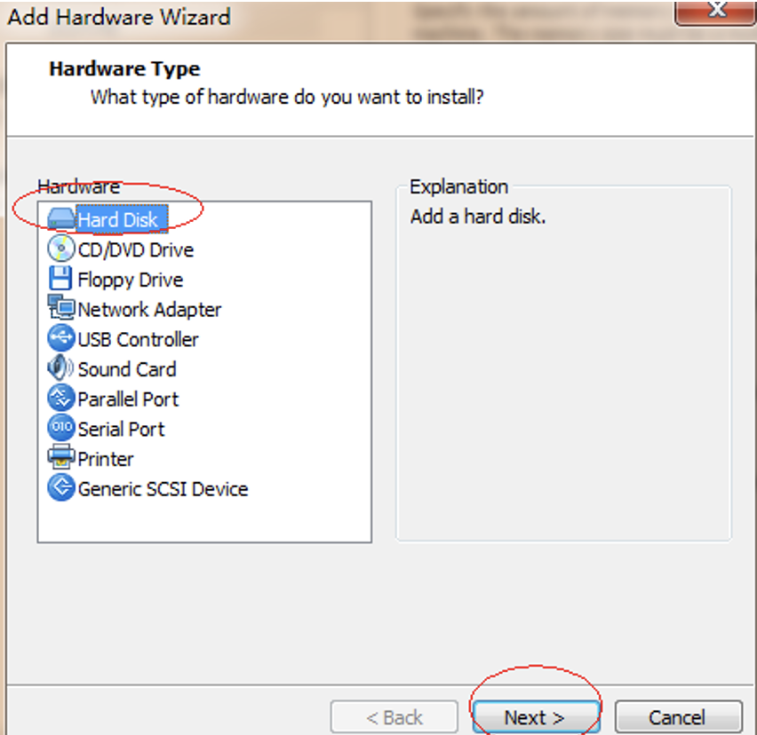
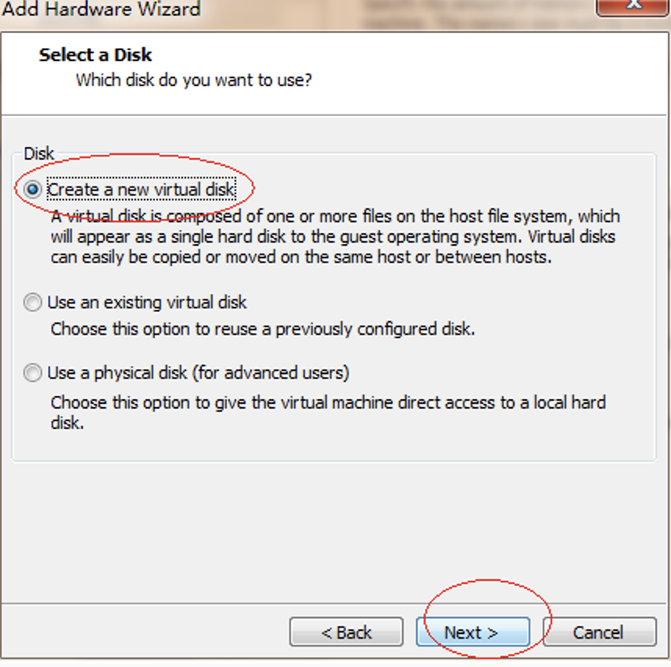
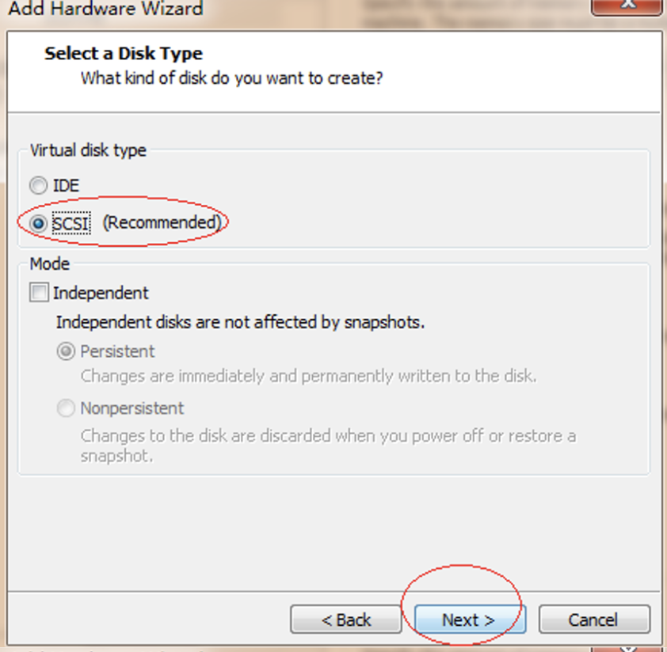
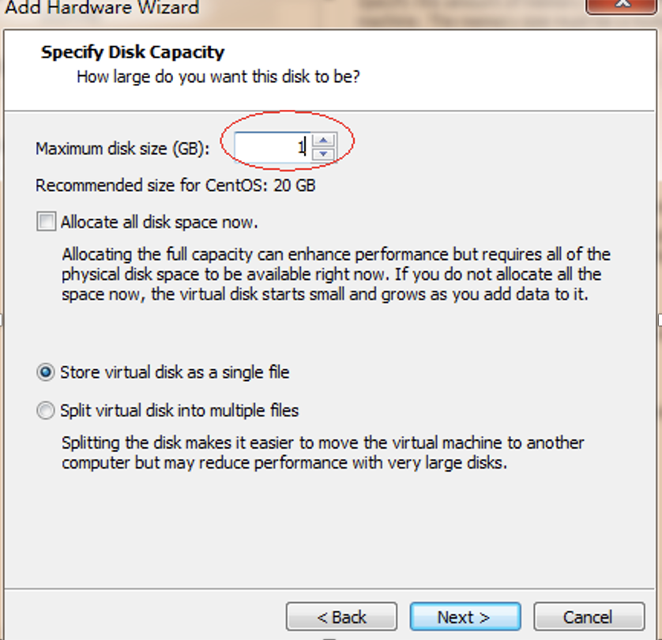
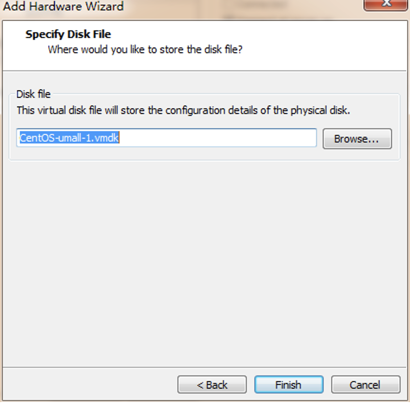
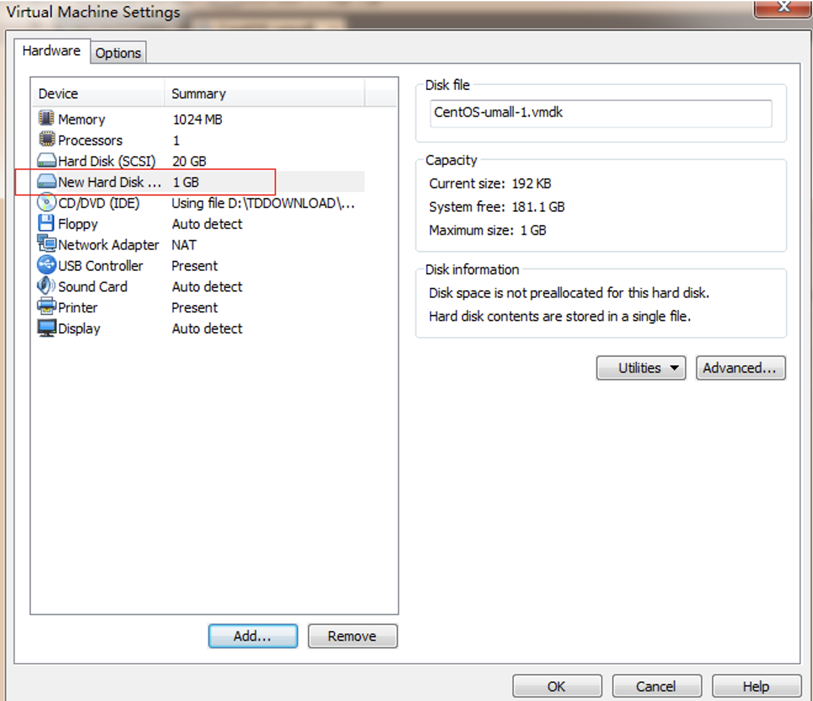

fdisk分区命令实战讲解
题目
在虚拟机里添加一块1G的虚拟磁盘，请使用fdisk进行分区
分成2P+E的方式
P1大小200M
P2大小200M
E大小600M，对于E分区，在分两个逻辑驱动器，分别为300M。
提示：对分区格式化方法mkfs.ext3 /dev/sda1（分区名）
1. 虚拟机添加一块1G的虚拟磁盘
关闭虚拟机，执行如下操作： 






重起虚拟机后，即可
2. 分区操作
2.1. fdisk分区
[root@stu412 ~]# fdisk –l #查看分区表
Disk /dev/sda: 21.4 GB, 21474836480 bytes
255 heads, 63 sectors/track, 2610 cylinders
Units = cylinders of 16065 * 512 = 8225280 bytes
Device Boot Start End Blocks Id System
/dev/sda1 * 1 16 128488+ 83 Linux
/dev/sda2 17 2544 20306160 83 Linux
/dev/sda3 2545 2609 522112+ 82 Linux swap / Solaris
Disk /dev/sdb: 1073 MB, 1073741824 bytes
255 heads, 63 sectors/track, 130 cylinders
Units = cylinders of 16065 * 512 = 8225280 bytes
Disk /dev/sdb doesn't contain a valid partition table #注意这里
[root@stu412 ~]# fdisk /dev/sdb
Device contains neither a valid DOS partition table, nor Sun, SGI or OSF disklabel
Building a new DOS disklabel. Changes will remain in memory only,
until you decide to write them. After that, of course, the previous
content won't be recoverable.
Warning: invalid flag 0x0000 of partition table 4 will be corrected by w(rite)
Command (m for help): m
Command action
a toggle a bootable flag
b edit bsd disklabel
c toggle the dos compatibility flag
d delete a partition
l list known partition types
m print this menu
n add a new partition
o create a new empty DOS partition table
p print the partition table
q quit without saving changes
s create a new empty Sun disklabel
t change a partition's system id
u change display/entry units
v verify the partition table
w write table to disk and exit
x extra functionality (experts only)
Command (m for help): l #查看分区类型
0 Empty 1e Hidden W95 FAT1 80 Old Minix bf Solaris
1 FAT12 24 NEC DOS 81 Minix / old Lin c1 DRDOS/sec (FAT-
2 XENIX root 39 Plan 9 82 Linux swap / So c4 DRDOS/sec (FAT-
3 XENIX usr 3c PartitionMagic 83 Linux c6 DRDOS/sec (FAT-
4 FAT16 <32M 40 Venix 80286 84 OS/2 hidden C: c7 Syrinx
5 Extended 41 PPC PReP Boot 85 Linux extended da Non-FS data
6 FAT16 42 SFS 86 NTFS volume set db CP/M / CTOS / .
7 HPFS/NTFS 4d QNX4.x 87 NTFS volume set de Dell Utility
8 AIX 4e QNX4.x 2nd part 88 Linux plaintext df BootIt
9 AIX bootable 4f QNX4.x 3rd part 8e Linux LVM e1 DOS access
a OS/2 Boot Manag 50 OnTrack DM 93 Amoeba e3 DOS R/O
b W95 FAT32 51 OnTrack DM6 Aux 94 Amoeba BBT e4 SpeedStor
c W95 FAT32 (LBA) 52 CP/M 9f BSD/OS eb BeOS fs
e W95 FAT16 (LBA) 53 OnTrack DM6 Aux a0 IBM Thinkpad hi ee EFI GPT
f W95 Ext'd (LBA) 54 OnTrackDM6 a5 FreeBSD ef EFI (FAT-12/16/
10 OPUS 55 EZ-Drive a6 OpenBSD f0 Linux/PA-RISC b
11 Hidden FAT12 56 Golden Bow a7 NeXTSTEP f1 SpeedStor
12 Compaq diagnost 5c Priam Edisk a8 Darwin UFS f4 SpeedStor
14 Hidden FAT16 <3 61 SpeedStor a9 NetBSD f2 DOS secondary
16 Hidden FAT16 63 GNU HURD or Sys ab Darwin boot fb VMware VMFS
17 Hidden HPFS/NTF 64 Novell Netware b7 BSDI fs fc VMware VMKCORE
18 AST SmartSleep 65 Novell Netware b8 BSDI swap fd Linux raid auto
1b Hidden W95 FAT3 70 DiskSecure Mult bb Boot Wizard hid fe LANstep
1c Hidden W95 FAT3 75 PC/IX be Solaris boot ff BBT
Command (m for help): n #建立一个新分区
Command action
e extended
p primary partition (1-4)
p #建立主分区
Partition number (1-4): 1 #选择分区号
First cylinder (1-130, default 1):
Using default value 1
Last cylinder or +size or +sizeM or +sizeK (1-130, default 130): +200M
Command (m for help): p #列出当前分区表情况
Disk /dev/sdb: 1073 MB, 1073741824 bytes
255 heads, 63 sectors/track, 130 cylinders
Units = cylinders of 16065 * 512 = 8225280 bytes
Device Boot Start End Blocks Id System
/dev/sdb1 1 25 200781 83 Linux
Command (m for help): n #再建立一个200M主分区
Command action
e extended
p primary partition (1-4)
p
Partition number (1-4): 2
First cylinder (26-130, default 26):
Using default value 26
Last cylinder or +size or +sizeM or +sizeK (26-130, default 130): +200M
Command (m for help): p #列出当前分区表情况
Disk /dev/sdb: 1073 MB, 1073741824 bytes
255 heads, 63 sectors/track, 130 cylinders
Units = cylinders of 16065 * 512 = 8225280 bytes
Device Boot Start End Blocks Id System
/dev/sdb1 1 25 200781 83 Linux
/dev/sdb2 26 50 200812+ 83 Linux
Command (m for help): n #建立扩展分区
Command action
e extended
p primary partition (1-4)
e
Partition number (1-4): 4
First cylinder (51-130, default 51):
Using default value 51
Last cylinder or +size or +sizeM or +sizeK (51-130, default 130):
#使用默认,将剩余空间分给此分区
Using default value 130
Command (m for help): p
Disk /dev/sdb: 1073 MB, 1073741824 bytes
255 heads, 63 sectors/track, 130 cylinders
Units = cylinders of 16065 * 512 = 8225280 bytes
Device Boot Start End Blocks Id System
/dev/sdb1 1 25 200781 83 Linux
/dev/sdb2 26 50 200812+ 83 Linux
/dev/sdb4 51 130 642600 5 Extended
Command (m for help): n #建一个逻辑分区，分别为300M。
Command action
l logical (5 or over) #已经没有扩展分区标记了
p primary partition (1-4)
l
First cylinder (51-130, default 51):
Using default value 51
Last cylinder or +size or +sizeM or +sizeK (51-130, default 130): +300M
Command (m for help): n #再建一个300M的逻辑分区
Command action
l logical (5 or over)
p primary partition (1-4)
l
First cylinder (88-130, default 88):
Using default value 88
Last cylinder or +size or +sizeM or +sizeK (88-130, default 130):
Using default value 130
Command (m for help): p
Disk /dev/sdb: 1073 MB, 1073741824 bytes
255 heads, 63 sectors/track, 130 cylinders
Units = cylinders of 16065 * 512 = 8225280 bytes
Device Boot Start End Blocks Id System
/dev/sdb1 1 25 200781 83 Linux
/dev/sdb2 26 50 200812+ 83 Linux
/dev/sdb4 51 130 642600 5 Extended
/dev/sdb5 51 87 297171 83 Linux
/dev/sdb6 88 130 345366 83 Linux
2.2. 将分区表存入磁盘
Command (m for help): w #将分区表存入磁盘
The partition table has been altered!
Calling ioctl() to re-read partition table.
Syncing disks.
[root@stu412 ~]# partprobe #通知操作系统分区表已经改变了,而不需要重新启动
[root@stu412 ~]# fdisk -l
Disk /dev/sda: 21.4 GB, 21474836480 bytes
255 heads, 63 sectors/track, 2610 cylinders
Units = cylinders of 16065 * 512 = 8225280 bytes
Device Boot Start End Blocks Id System
/dev/sda1 * 1 16 128488+ 83 Linux
/dev/sda2 17 2544 20306160 83 Linux
/dev/sda3 2545 2609 522112+ 82 Linux swap / Solaris
Disk /dev/sdb: 1073 MB, 1073741824 bytes
255 heads, 63 sectors/track, 130 cylinders
Units = cylinders of 16065 * 512 = 8225280 bytes
Device Boot Start End Blocks Id System
/dev/sdb1 1 25 200781 83 Linux
/dev/sdb2 26 50 200812+ 83 Linux
/dev/sdb4 51 130 642600 5 Extended
/dev/sdb5 51 87 297171 83 Linux
/dev/sdb6 88 130 345366 83 Linux
2.3. 格式化分区
[root@stu412 ~]# mkfs.ext3 /dev/sdb1 #格式化分区
mke2fs 1.39 (29-May-2006)
Filesystem label=
OS type: Linux
Block size=1024 (log=0)
Fragment size=1024 (log=0)
50200 inodes, 200780 blocks
10039 blocks (5.00%) reserved for the super user
First data block=1
Maximum filesystem blocks=67371008
25 block groups
8192 blocks per group, 8192 fragments per group
2008 inodes per group
Superblock backups stored on blocks:
8193, 24577, 40961, 57345, 73729
Writing inode tables: done
Creating journal (4096 blocks): done
Writing superblocks and filesystem accounting information: done
This filesystem will be automatically checked every 29 mounts or
180 days, whichever comes first. Use tune2fs -c or -i to override.
[root@stu412 ~]# dumpe2fs /dev/sdb1 | grep -i "block size" #查看block大小
dumpe2fs 1.39 (29-May-2006)
Block size: 1024
[root@stu412 ~]# mkfs.ext3 -b 4096 /dev/sdb2 #指定block size大小
mke2fs 1.39 (29-May-2006)
Filesystem label=
OS type: Linux
Block size=4096 (log=2)
Fragment size=4096 (log=2)
50240 inodes, 50203 blocks
2510 blocks (5.00%) reserved for the super user
First data block=0
Maximum filesystem blocks=54525952
2 block groups
32768 blocks per group, 32768 fragments per group
25120 inodes per group
Superblock backups stored on blocks:
32768
Writing inode tables: done
Creating journal (4096 blocks): done
Writing superblocks and filesystem accounting information: done
This filesystem will be automatically checked every 39 mounts or
180 days, whichever comes first. Use tune2fs -c or -i to override.
[root@stu412 ~]# mkfs.ext3 -b 4096 /dev/sdb5
[root@stu412 ~]# mkfs.ext3 -b 4096 /dev/sdb6
2.4. tune2fs:调整/查看ext2/ext3文件系统的文件系统参数
[root@stu412 ~]# tune2fs -c 1 /dev/sdb1
#设置强制自检的挂载次数，如果开启，每挂载一次mount conut就会加1，超过次数就会强制自检
tune2fs 1.39 (29-May-2006)
Setting maximal mount count to 1
[root@stu412 ~]# tune2fs -c 1 /dev/sdb2
tune2fs 1.39 (29-May-2006)
Setting maximal mount count to 1
[root@stu412 ~]# tune2fs -c 1 /dev/sdb5
[root@stu412 ~]# tune2fs -c 1 /dev/sdb6
2.5. 挂载到目录
[root@stu412 data]# mkdir -p /data/disk
[root@stu412 data]# mount /dev/sdb1 /data/disk
[root@stu412 disk]# df -h
Filesystem Size Used Avail Use% Mounted on
/dev/sda2 19G 2.4G 16G 13% /
/dev/sda1 122M 12M 104M 10% /boot
tmpfs 506M 0 506M 0% /dev/shm
/dev/sdb1 190M 5.6M 175M 4% /data/disk
[root@stu412 data]# cd /data/disk/
[root@stu412 disk]# ll
total 12
drwx------ 2 root root 12288 Jul 28 16:24 lost+found
[root@stu412 disk]# touch file1
[root@stu412 disk]# mkdir dir
#但是这样一重启后，挂载信息就会丢失，可以写入/etc/fstab,实现开机时自动挂载
[root@stu412 disk]# cat /etc/fstab
LABEL=/ / ext3 defaults 1 1
LABEL=/boot /boot ext3 defaults 1 2
tmpfs /dev/shm tmpfs defaults 0 0
devpts /dev/pts devpts gid=5,mode=620 0 0
sysfs /sys sysfs defaults 0 0
proc /proc proc defaults 0 0
LABEL=SWAP-sda3 swap swap defaults 0 0
/dev/sdb1 /data/disk ext3 defaults 0 0
#手动添加最后一行内容
[root@stu412 disk]# mount –a #加载所有的挂载, mount –a测试请看下面
[root@stu412 disk]# df -h
Filesystem Size Used Avail Use% Mounted on
/dev/sda2 19G 2.4G 16G 13% /
/dev/sda1 122M 12M 104M 10% /boot
tmpfs 506M 0 506M 0% /dev/shm
/dev/sdb1 190M 5.6M 175M 4% /data/disk
#mount –a测试,启用/etc/fstab里的挂载
[root@stu412 data]# umount /data/disk/
[root@stu412 data]# df -h
Filesystem Size Used Avail Use% Mounted on
/dev/sda2 19G 2.4G 16G 13% /
/dev/sda1 122M 12M 104M 10% /boot
tmpfs 506M 0 506M 0% /dev/shm
[root@stu412 data]# mount -a
[root@stu412 data]# df -h
Filesystem Size Used Avail Use% Mounted on
/dev/sda2 19G 2.4G 16G 13% /
/dev/sda1 122M 12M 104M 10% /boot
tmpfs 506M 0 506M 0% /dev/shm
/dev/sdb1 190M 5.6M 175M 4% /data/disk